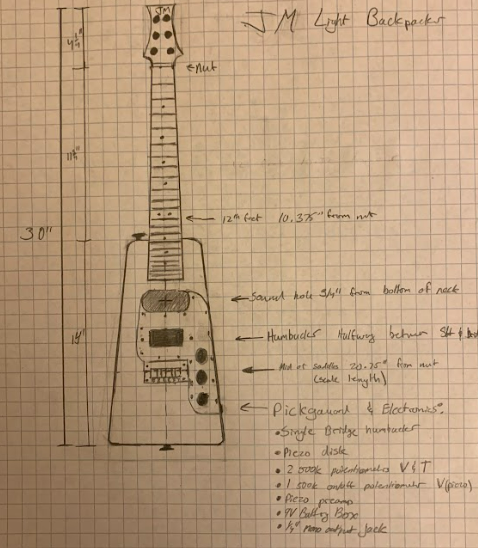
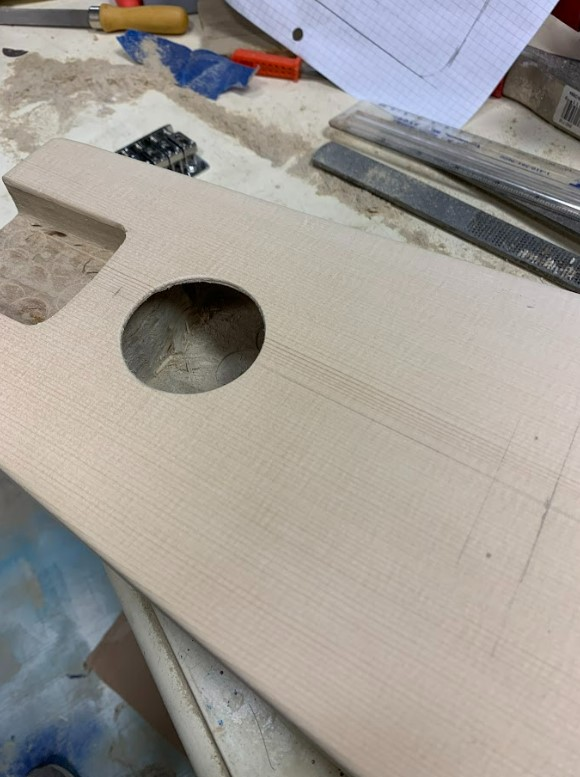

Playing guitar and singing are two of my favorite hobbies. Since I share this passion with my father, I'm fortunate to have access to several guitars. However, as any guitarist knows, the right number of guitars to own is always “one more than you currently have.” With limited funds and a unique use case, the guitar I wanted wasn't easy to find. After falling deep into a guitar building YouTube rabbit-hole, I set out to design and build my own.
Overview
This guitar is intended to be a small form factor versatile instrument. It can be played as an acoustic or electric guitar or both, and it works well in combination with a miniature amp. Features include...
- Electric Guitar Humbucker Pickup
- Acoustic-Electric Guitar Piezo Disk Pickup
- Hollow body construction
- 3-way selector switch for acoustic/both/electric

Design and Construction
This guitar is designed and constructed in a similar fashion a Fender Thinline Telecaster with similar design elements such as...
- Body constructed from hollowed out poplar blank
- Pickgaurd containing electronics wired separately, then dropped in
- Bolt-on neck
After hollowing the body, a spruce top is glued over the body cavity. This is a departure from the Telecaster inspiration and instead resembles an acoustic guitar top. Appropriate cutouts are then made for the sound hole and neck pocket.
